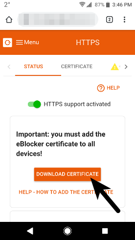
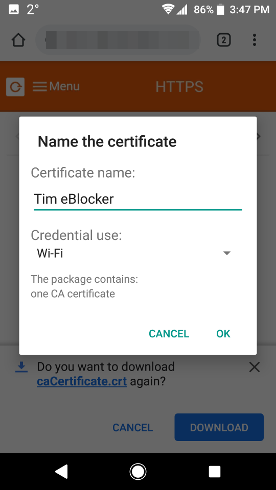

eBlocker Help > FAQs > HTTPS function (SSL/HTTPS)
With just a few steps you have stored the certificate. Please use the Google Chrome browser,
Open the eBlocker HTTPS configuration page, or the eBlocker Dashboard.
On the HTTPS configuration page, click the START HTTPS Wizard button, or on the eBlocker Dashboard in the HTTPS card, click the START HTTPS Wizard link.
The wizard will show you step by step how to store the eBlocker certificate in Android.
Alternatively, you can store the eBlocker certificate without the wizard.


For Android versions smaller than version 6, it is sufficient to save the certificate only at "Wi-Fi".
If the eBlocker certificate is not opened automatically you can find it in your download folder.